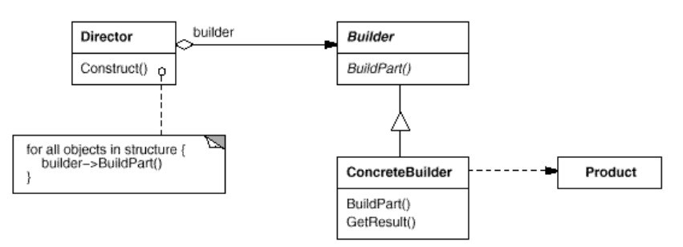

浅谈设计模式十五: 生成器模式(Builder)
Table of Contents
实例
批萨店有不同种类的批萨，每种批萨的制作流程类似，如果每个批萨都创建一个类，并且在各自类中完成各自的制作，那么制作流程的代码就会重复，并且制作过程与对象本身融合在一起，那么如何把所有批萨类似的制作流程分离出来，并消除代码冗余呢？
生成器模式(Builder)
目的
把复杂对象的建造过程从它的表示中分离出来，使得同样的创建过程能创建不同表现的对象。
实现
利用生成器模式，把批萨制作流程分离出来，从而不同批萨能使用同样的制作流程。代码实例在这里。
批萨的基类
批萨的基类定义生成器可以配置不同的参数，从而达到同样的流程创建不同的对象。
class Pizza { public: Pizza() {} virtual ~Pizza() {} void set_dough(string dough) { dough_ = dough; } void set_sauce(string sauce) { sauce_ = sauce; } void set_topping(string topping) { topping_ = topping; } };
生成器抽象类
维护一个批萨的实例，并声明生成器制作接口。
class PizzaBuilder { public: virtual ~PizzaBuilder() {} Pizza* get_pizza() { return pizza_; } void createPizza() { pizza_ = new Pizza(); } virtual void buildDough() = 0; virtual void buildSauce() = 0; virtual void buildTopping() = 0; protected: Pizza *pizza_; };
Clam批萨的生成器
class ClamPizzaBuilder : public PizzaBuilder { public: virtual ~ClamPizzaBuilder() {} virtual void buildDough() { pizza_->set_dough("thinCrust"); } virtual void buildSauce() { pizza_->set_sauce("marinaSauce"); } virtual void buildTopping() { pizza_->set_topping("pepperoni"); } };
Cheese批萨的生成器
class CheesePizzaBuilder : public PizzaBuilder { public: virtual ~CheesePizzaBuilder() {} virtual void buildDough() { pizza_->set_dough("thickCrust"); } virtual void buildSauce() { pizza_->set_sauce("plumTomato"); } virtual void buildTopping() { pizza_->set_topping("pineapple"); } };
Waiter 制作批萨
维护一个不同批萨生成器的实例，通过不同生成器和同样的流程制作批萨，达到制作和产品本身的分离。
class Waiter { public: virtual ~Waiter(); void set_pizza_builder(PizzaBuilder *pizza_builder) { pizza_builder_ = pizza_builder; } Pizza* get_pizza() { return pizza_builder_->get_pizza(); } void constructPizza(); private: PizzaBuilder *pizza_builder_; }; void Waiter::constructPizza() { pizza_builder_->createPizza(); pizza_builder_->buildDough(); pizza_builder_->buildSauce(); pizza_builder_->buildTopping(); }
总结
生成器模式(Builder)结构

组成
- 生成器（Builder）为创建产品（Product）对象的部分指定一个抽象接口。
- 具体生成器（ConcreteBuilder）
- 实现生成器（Builder)的接口以构造和装配该产品(Product)的各个部件。
- 定义并明确它所创建的表示。
- 提供一个检索产品的接口
- 管理者（Director）构造一个使用Builder接口的对象
- 产品类（Product）
- 表示被构造的复杂对象。ConcreateBuilder创建该产品的内部表示并定义它的装配过程。
- 包含定义组成部件的类，包括将这些部件装配成最终产品的接口。
应用场景
- 当创建复杂对象的算法应该独立于该对象的组成部分以及它们的装配方式时；
- 当构造过程必须允许被构造的对象有不同的表示时。